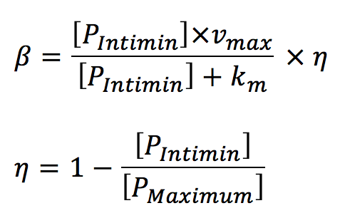
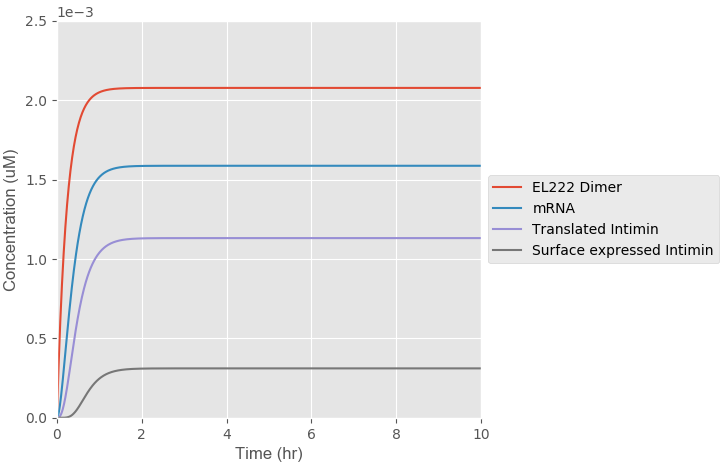
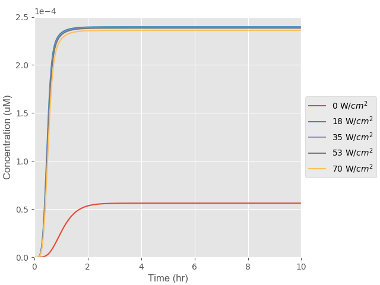

‘LEGIT: From light to structure’
A mathematical model of how E. Coli cells are guided to form structures
The Science behind LEGIT
LEGIT is a mathematical model that determines the conditions required for optimal and rapid
light activated expression of the protein intimin. Intimin is a protein expressed on the surface of our genetically
engineered E. coli cells. It is used as an anchor on which we fuse our binding partners, SpyTag and SpyCatcher.
Once SpyTags and SpyCatchers have attached to a particular cell they form a covalent bond. This binding allows our cells to aggregate into shapes. We ideally want to control the
amount of intimin produced on the surface of our cells in order to control the amount of binding that takes place between our cells.
Breakdown of the cellular mechanims involved in the expression of intimin:

Legend:
EL222M = EL222 monomer
EL222D = EL222 dimer
PrLuxI = LuxI Promoter
PrLuxI+ED = EL222 dimer bound to the promoter
PIntimin = Intimin protein in the cytoplasm
PSurface = Intimin protein on the cell surface
We decided to divide our model into four main steps:
- 1. Light activation
- 2. Transcription
- 3. Translation
- 4. Trasnport of intimin from the cell's cytoplasm to the cell surface

LEGIT differs from conventional protein expression models
as it incorporates two innovative twists. The first being rate kinetics that are dependent on light induced systems
and the second the transmembranal transport of the intimin protein to the surface of our E.coli cell.
Model aims
- Determine the rate limiting cellular mechanism
- Optimise the rate limiting parameters by using a conventional (Sensitivity Analysis) and an innovative (Paramter Sampling) approach
- Determine the range of optimal light intensities and light pulses our Wet Lab should test
- Conduct a Cost Analysis to evaluate the economic viability of our optogenetic tool
Interested to understand how we did this? Scroll down to find detailed descriptions of each of our modelling steps
Modelling steps
1.) Light activation

Step 1: Photoactivation, dimerization and binding of the Transcription Factor (EL222) to the LuxI promoter
Location: Cytoplasm
The first step of our LEGIT simulation involves determining the amount of EL222 dimers (EL222D) present in the cell.
EL222D are the transcription factors used to activate the expression of intimin in the cell. An EL222 D is produced from
the photo-activated dimerization of two EL222 monomers (EL222M) found in the cell. We wanted to establish this relationship
because once EL222D binds to the LuxI promotor, it starts to promote the transcription of mRNA.

Since we know that photo-activation is dependent upon light intensity (L) we used the Hill
equation in our ODE to evaluate our inducible promoter genetic circuits. We did this so we could evaluate the effect different
light intensities would have on the rate of photo-activation of EL222.

2.) Transcription

Step 2: Transcription
Location: Cytoplasm
The second step of our simulated model involves determining the levels of mRNA transcribed from the light
induced transcription. Production of mRNA is dependent upon the concentration of EL222D and the rate at which EL222D
binds to the LuxI promoter. We took dilution rates due to both cell growth/division and mRNA degradation into consideration
when accounting for mRNA equilibriums.

3.) Translation

Step 3: Translation
Location: Cytoplasm
The next step of our model seeks to establish the production levels of the surface protein intimin from translation.
The rate of intimin production is subject to changes in the rate of mRNA translation. Once intimin is translated, it is
continuously transported to the surface of the E. Coli cell, therefore intimins' concentration in the cell decreases continuously. To account
for fluctuation, we created a function that takes the transport rate of intimin to the surface to the E. Coli cells into consideration.

We expect the speed at which intimin is transported to the surface of the cell to decrease over time.
This is because as time passes there will be a decrease in available space for intimin on the cell surface. We adapted the
Michaelis Menten equation to allow for the consideration of the intimin proteins already occupying space on the cell surface (PSurface)
and the maximum available space for intimin proteins on the cell surface. The variable was set as the limit for the
maximum number of intimin proteins that can be expressed on the cell surface, thus preventing any other proteins from becoming expressed.

Finally, we also decided to consider the fact that dilutions can occur due to cell growth and the half-life of the intimin protein. As such we introduced a degradation term to represent such degradations of intimin over time.
4.) Transport

Step 4: Transport of intimin to the surface of the cell
Location: Cell surface
Our final differential equation simulates the change in concentration of intimin expressed on the cell
surface over time. This equation takes both the rate at which intimin is being transported to the cell surface
and the intimins’ degradation rate into consideration.

Not enough science? Check out the project description page!
Results
Using our LEGIT simulation, we generated graphs and evaluated them to determine the optimal
range of values our Wet Lab team should seek to experiment with.
Determining the rate limiting step in intimin expression
We used rate kinetics modelling to determine the rate limiting step involved in
the cellular mechanism of intimin expression.
Click here to check out our approaches and assumptions!

Figure 1: Demonstrates the rate of the cellular mechanisms involved in the expression of intimin
(More specifically the rates of: EL222D production and binding to the LuxI promoter; Transcription; Translation; and transport of translated Intimin to the cell surface)
From Figure 1 it is evident that the concentration of the surface expressed intimin appears to be much lower
than the other species produced from previous cellular mechanisms. As such we decided to plot a second graph to
evaluate only the rate of intimin transportation to the cell surface on a rescaled plot.

Figure 2: Depicts the rescaled Graph to view the rate of Surface Expression of Intimin
| Step |
Time taken to plateau (hr) |
| Dimerization of EL222 |
1.3 |
| Transcription |
1.6 |
| Translation |
2.4 |
| Transport of intimin to the surface |
3.2 |
A rate limiting step in a process is the step that takes the longest to reach its maximum
value or the one that takes the longest to plateau. We identified the rate at which intimin is transported to
the cell surface as being the limiting step in this cell mechanism. Because speed is essential to our LIT technology
we decided to optimise the rate limiting parameters within the ODE describing intimin transfer to the cell surface.
Optimising Light intensity
Our LEGIT model is initiated with the photoactivation of our EL222M transcription factor.
Therefore, we thought it would be interesting to evaluate the effect different light intensities had on the concentration
and rate of expression of intimin on the cell surface. The range of values we selected to test fell within the range of
0 W/cm2 and 70 W/cm2, where 0 W/cm2 represented our system in its off state and 70 W/cm2 represented
the maximum light intensity E. coli can withstand before they started to die.
Sensitivity Analysis of Light Intensities

Figure 3: Demonstrates the effect light intensity has on the concentration and rate of expression of intimin on the cell surface
From Figure 3 we see that as light intensity (used to activate expression of intimin)
increases there is a corresponding direct increase in the concentration of intimin expressed on the surface of the cells.
Interestingly, at 0 W/cm2 we still experience some intimin expression due to leakage of promoter expression.
The concentration of intimin expressed on the cell surface at a light intensity of 0 W/cm2 was assumed to not be
sufficient to cause cell adhesion.
Wetlab contribution
Real life experimental data could be obtained for this model by exposing E.coli cells to varying
intensities of blue light and extracing EL222 dimers and thereafter running a SDS PAGE.
One could thus evaluate the effect light intensity has on the production of dimers from EL222.
The amount of dimerization taking place could be measured by looking at the distance the EL222 extracts travel down
the SDS page, where a shorter distance will be travelled by the EL222 dimers due to its larger molecular weight.
Optimising the parameters in the rate-limiting step
We decided to optimize the rate-limiting parameters present in the ODE which describes
the transport of intimin from the cell cytoplasm to the cell surface. The two rate-limiting parameters identified were: Vmax and Km.
Where Km represents the affinity the surface of the cell has for the intimin protein and Vmax represents
the maximum rate at which intimin can be expressed on the surface of the cell. The maximum and minimum values that could be assigned to each parameter
were determined from literature. We decided to optimize the values for each parameter using two approaches, Sensitivity Analysis and Parameter Sampling.
Optimising the Km value
Ideally, we would want a low Km value so as to increase the affinity
of the cell surface for the intimin. This would decrease the time taken for intimin to be transported to the cell surface.
Sensitivity Analysis for Km

Figure 5: Evaluates the effect Km has on the rate of intimin expression on the cell surface with the use of a Sensitivity Analysis
We first decided to run a Sensitivity Analysis to get a better understanding of
the range of Km values we should be using in our optimized model. From Figure 5 it is evident the optimum Km value is
5E-06 uM. Sensitivity Analyses focus on selecting the most optimum conditions even if they cannot be achieved by the
specific cellular mechanisms evaluated. We therefore decided to conduct Parameter Sampling to ensure the value we select
to optimize our Km to can realistically be achieved in our cells.
Parameter Sampling for Km

Figure 6: Evaluates the effect Km has on the rate of intimin expression on the cell surface with the use of Parameter Sampling
Parameter Sampling takes the specifics of a particular cellular mechanism into consideration,
which is why we believe the results obtained from this approach should be more representative of the actual optimized Km value
that could be achieved in our technology.
Optimising the Vmax value
We would want to maximise the parameter of Vmax in order to decrease the time it takes for the surface of the cell to fill up with
intimin.
Sensitivity Analysis for Vmax

Figure 7: Evaluates the effect Vmax has on the
rate of intimin expression on the cell surface with the use of a Sensitivity Analysis
In Figure 7 it is evident that from the Sensitivity Analysis a very high, unrealistically achievable Vmax value is
presented as the most optimal value for our Vmax.
Want to find out more about Sensitivity Analysis? Click here!
Parameter Sampling for Vmax

Figure 8: Evaluates the effect
Vmax has on the rate of intimin expression on the cell surface with the use of Parameter Sampling
Parameter Sampling allowed us to take a series of factors into consideration when optimising the value of Vmax.
The values of Vmax represented in figure 8 are more realistic and significantly lower than
the ones obtained from the Sensitivity Analysis. This is because a series of factors were taken into consideration when
creating a normal distribution of the possible Vmax values for our technology.
Curious about the steps Paramater Sampling actually entails? Have a look at our Methods page
Determining the effect light pulsing has on intimin expression
Once we determined increasing light intensity causes a proportional increase to the concentration
and rate of expression of intimin on the surface of the cell, we decided to evaluate the effect other light properties would
have on our system. More specifically, we decided to evaluate whether light pulsing had an effect on intimin expression.
This would allow us to see whether continuously activating and deactivating our light induced system could result in the expression
of a larger concentration of intimin on the surface of the cell.
We first ran a control simulation, where we introduced one long pulse of 7 hours of light, in order to
ensure we received a curved response that would simulate the activation and deactivation of our cellular mechanisms
for a defined period of time.

Figure 9: Evaluates the effect a single pulse has on the rate
kinetics of the expression of intimin
From Figure 9 it is evident the behavior of all the species produced, after each step involved in the expression
of intimin, is represented in a dumb-bell shaped curve. This is justifiable, as when the light is turned off we
expect the rate of product production to be smaller than the rate of product degradation. Therefore, as time passes
the concentration of each product from each step is expected to decrease.
We then wanted to evaluate the effect pulsing for periods of 4 hours would have on the expression of intimin
on the surface of the cell.

Figure 10: Demonstrates the effect pulsing light, at 4-hour intervals,
has on the rate kinetics of the expression of intimin
From Figure 10 we discovered that if we pulse light on the cells for a period of 4 hours three times
within 24 hours, we experienced more than a 10-fold increase in the concentration of intimin expressed on the
surface of the cells.
WE NEED TO TALK ABOUT THE SCIENCE OF WHY THIS HAPPENS
Optimised conditions
The biggest increase in the rate of intimin expression on the surface of the cells occurs
when the value of Km decreases and the values of Vmax increases. This is something we expected, as the lower the
value of Km the higher the affinity our cells’ membranes would have for intimin and therefore the faster the
transport of intimin to the cell surface. In addition, the higher the Vmax the faster the rate at which the reaction
occurs. Thus, the combination of both of these phenomena results in faster transport of intimin to the surface of the cell.
| Optimised Paramter |
Value |
| Km (uM) |
1.9E-07 |
| Vmax (1/s) |
240 |
Running the model with optimised parameters
We ran our rate kinetics model with our newly optimised parameters and determined that with our optimised parameters there was a 5% increase in the concentration of intimin transported to the surface of the cell. However, the same amount of time was taken for the intimin expression rate to plateau. Therefore, this
means that although the concentration of intimin expressed on the surface of the cell was optimised this step prevails to be the rate-limiting step in the network of cellular mechanisms involved.
Figure 11: Original rate kinetics for the transport of intimin to the cell surface

Figure 12: Optimised rate kinetics for the transport of intimin to the cell surface
Cost Analysis
We ran a Cost Analysis to ensure our LIT optogenetic tool was an affordable technology
current labs could use to replace alternative technologies. We focused on identifying the main operational
costs a user would incur, where we determined the most critical ones to be: the light intensity they used to activate
the E.coli cellular mechanism; and the frequency of light pulsing. We created a function in Python that took costs
incurred for both methods into consideration and identified the most cost-efficient operational
conditions for our tool.
Figure 13: Demonstrates the effect light intensity has on the cost
for the operation (£ per W/cm2) of our optogenetic tool
The simulation in Figure 13 was run for a period of 2 hours, where we assumed a constant source of light to
be present for the whole period of time. The costs incurred increase directly proportionally
to the light intensity at which our optogenetic tool is operated at.
We also decided to analyse the impact light pulsing would have on the overall process costs.
Figure 14: Depicts the effect of light pulsing on the cost
for the operation of the optogenetic tool running for 2 hours (£/hour)
The simulation in Figure 14 was also run for a period of 2 hours, where we assumed a constant light intensity
of 40 W/cm2. Similar to Figure 13, we see that an increase in the pulse duration results in a proportional
increase in the cost of operation.
We then decided to plot both the costs incurred for different light intensities and the
pulsing durations on the same graph to evaluate their synergistic effect.

Figure 15: Demonstrates a comparison of the effects of light pulsing and light intensity on the overall cost of our optogenetic tool
We decided to define the optimum operating conditions for our optogenetic tool as those at which both
lines intersect. Beyond the point of intersection, the operational costs for the optogenetic
tool are too high. Below the intersection point the activity of the E. coli cell adhesion
mechanism is too slow. As one of the biggest selling points for our technology is its rapidity we decided
it would not be feasible to operate at such a slow rate.
We established the best costing trade-off to be when operating our technology
at a light intensity of 30 W/cm2 with a 4.5-hour pulsing frequency.
Alternative applications of our model
Pharmaceutical Industry
We envision our model could be adapted and used by Pharmaceutical companies to optimize their
manufacture operation conditions to obtain a high product yield. Focus could be placed on identifying the bottleneck
of the manufacturing process, or the stage at which the greatest concentration of product is lost in the manufacturing process.
Each differential equation could represent a batch mode taking place in one-unit operations, where the product concentration
changes over time. For each equation, we would include the loss of product in the form of degradation rates, as this would
signal a decrease in product concentration. For each of these conditions a discount factor for the product concentration
would need to be introduced. The product loss could be due to: the product getting stuck in crevices in the machinery;
product degradation due to a limited half-life; and/or product aggregation to other cellular debris. This model would help
companies determine the unit operation at which the largest product loss is experienced.
Stock market
Similarly, our model could be adapted to characterize the volatile nature of publically listed
companies’ share prices in the stock market. One could divide the differential equations into the main factors which
affect the share price of a company. These factors could be: the Lombard Rate, which is set by the European Central Bank;
the desirability of a company’s shares (set as a function of the market share a company has); and a company’s share price.
A decrease in the Lombard rate would result in an increase in the share price of a company, which would lead to an increase
in the number of the company’s shares bought from the stock market resulting in an increase of market share the company was
gaining in its industrial sector. Through our model financial institutions could identify the time it takes for a change in
the Lombard Rate to result in a change in the company’s market share. Simultaneously, once the bottleneck is identified,
the company’s management team could optimize parameters (such as advertising or product diversification) to minimize the
time taken for this change to occur.
Collaboration
Throughout the summer we had a bilateral collaboration with the iGEM SVCE 2017 team from India.
Our collaboration started off with us sending each other useful sources and tutorials on how to approach modelling for
cellular mechanisms, as neither team considered itself an expert in the field. Once we both started forming the differential
equations for our respective models, we sent each other documents with a summary of our ODEs and provided feedback to each other.
Both teams provided constructive feedback on how to present complex information in a simple manner to make it easy to understand
for non-modellers, while at the same time helped refine each other’s differential equations.
Legit Assumptions
- Mass action kinetics
- Michaelis Menten kinetics
- All reactions are taking place in cells that are plated in a petri dish
- Light intensity is the only factor affecting the intimin protein expression in the cells
- Every cell is activated by the same light intensity, regardless of its position in the petri dish
- There is no light reflection or refraction from the cells
- All cells are at their exponential growth phase
- All cells are equally as probable to express SpyTag and SpyCatcher
- SpyTag and SpyCatcher are constitutively expressed with Intimin
LEGIT Species

Legit Parameters

Legit Initial Conditions